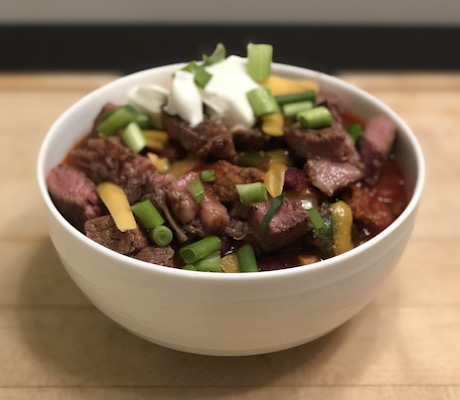

The Best Chili You Will Ever Eat
Ingrediants
- San Marzaon Tomatoes (Whole Peeled)
- Triblend Beans
- 1 lb of 80/20 Ground Beef
- Spring Onions
- 8 - 12 oz Ribeye
- Shredded Chedder Cheese
- Poblano Pepper
- 3-4 Cloves of Garlic
- 2 Jalapenos
- Sour cream
- Avocado Oil
- Spice Mix (store bought or your own)
Preparation
- To start you have to first decide if you want to use a stroe bought mix or a spice mix of your own, I personal always use my own and it consists of salt, pepper, onion powder, garlic powder, red pepper flakes, chili powder, smoked paprika, and chipotle chili Powder
- Next open your tomatoes and break them up into a large pot. Strain and rinse your beans if you would like and at them to the pot with the tomatoes. Let these simmer while you prepare your other ingrediants.
- Finely chop your onions, jalapenos, garlic, and poblano peppers. Remove the seeds from the peppers if you do not like spicy chili. Once these are chopped add everything to the pot except the onions, those will be saved for serving.
- At this point you can prepare the ground beef. Salt and pepper the ground beef and place in a medium skillet to cook all the way through. You will want to cook until all the pink is gone. Once done straing the excess juices and add the ground beef to the pot. Make sure to stir the chili as you cook.
- The ribeye is optional, but adds a level of flavor and presentation that is unmatched. Wipe clean the same skillet you used for the ground beef. Salt, pepper, and add avocado oil (or your preferred oil) onto the ribeye. Depending on the thickness of the steak it could tak 3-6 minutes per side to cook to medium, medium rare. Use a thermometer to check the temperature or you can always cut into the steak to visually check.
- Once your steak is done cooking, pull it from the skillet and let it rest for 2-3 minutes. From there cut across the grain into bite size chunks.
- Finally you can build. Scoop the chili into a bowl, add the some of the Ribeye to the top, add cheese, spring onions, and sour cream if you prefer.